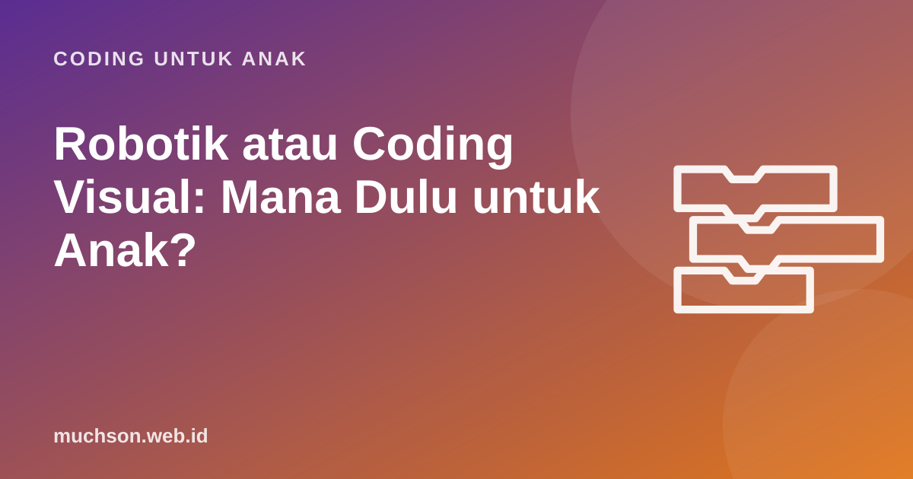

Beranda › Artikel › Coding untuk Anak
Coding untuk AnakRobotik atau Coding Visual: Mana Dulu untuk Anak?
Robot yang bergerak sungguhan memang memikat. Banyak orang tua lalu bertanya: lebih baik les robotik atau belajar coding di komputer dulu? Jawabannya bergantung pada usia, minat, dan anggaran. Artikel ini membandingkan keduanya dan memberi urutan yang masuk akal untuk kebanyakan anak.

Sama-sama coding, beda wadah
Robotik untuk anak pada dasarnya adalah coding yang hasilnya menggerakkan benda fisik: motor, lampu, sensor jarak, atau speaker. Banyak kit robotik untuk anak memakai bahasa blok yang mirip Scratch. Jadi perbedaan utamanya bukan pada konsep pemrograman, melainkan pada wadah hasilnya: layar atau dunia nyata.
Apa yang dipelajari di masing-masing
| Aspek | Coding visual | Robotik |
|---|---|---|
| Algoritma dan loop | Ya | Ya |
| Kondisi dan variabel | Ya, mendalam | Ya, sering lewat sensor |
| Kreativitas cerita dan seni | Sangat kuat | Terbatas |
| Mekanika, roda gigi, struktur | Tidak | Kuat |
| Sensor dan data dunia nyata | Terbatas | Kuat |
| Latihan mandiri di rumah | Mudah | Butuh kit di rumah |
Satu hal yang perlu dipahami: robot fisik menambah sumber masalah baru. Program bisa benar, tetapi robot tetap belok miring karena roda licin atau baterai lemah. Bagi anak yang lebih besar, ini pelajaran berharga tentang dunia nyata. Bagi pemula, ini bisa membingungkan: "programku salah atau robotnya?"
Urutan yang masuk akal untuk kebanyakan anak
Alasannya praktis. Belajar logika di layar lebih murah, bisa dilakukan setiap hari, dan kesalahan langsung terlihat tanpa gangguan fisik. Begitu anak memahami loop, kondisi, dan variabel, ia akan memakai waktu bersama robot untuk hal yang benar-benar baru: sensor, gerakan, dan mekanika.
Pengecualian: anak usia 5-7 tahun yang sangat kinestetik kadang lebih tertarik pada robot lantai sederhana yang diprogram dengan tombol panah. Untuk mereka, robot sederhana bisa menjadi pintu masuk, lalu dilanjutkan ke ScratchJr atau Scratch.
Pertimbangan biaya
Kit robotik pendidikan harganya sangat bervariasi, dari papan mikrokontroler kecil seperti micro:bit sampai set robot bermerek yang jauh lebih mahal. Les robotik biasanya juga menyediakan kit di tempat, sehingga anak tidak bisa berlatih di rumah tanpa membeli sendiri. Coding visual hanya membutuhkan komputer yang mungkin sudah ada di rumah.
Latihan logika "robot" di layar
Sebelum membeli robot, coba latihan robot di layar ini bersama anak. Konsep yang dipakai, yaitu maju, belok, dan urutan, sama dengan memprogram robot fisik pertama:
Kalau anak menikmati latihan seperti ini, ia kemungkinan juga akan menikmati robotik kelak. PixelKode berisi 104 level Robo yang melatih logika memprogram robot, dari urutan sampai variabel, sebagai fondasi sebelum anak memegang robot sungguhan.